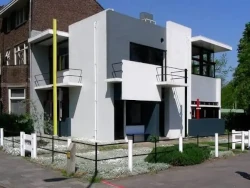

Sobre mim
Olá! Me chamo Isabela Saraiva e sou estudante de Arquitetura e Urbanismo. Aqui vou falar
um pouco sobre meu portfólio e você irá conhecer melhor o meu trabalho!
Arquitetura contemporânea
Arquitetura contemporânea compreende todos os estilos arquitetônicos vigentes depois do Modernismo, a partir da década de 80 e 90 do século XX. A arquitetura Pós-Moderna e Sustentável são alguns exemplos de estilos de arquitetura contemporâneos.
A arquitetura contemporânea surgiu no final dos anos 80 e está presente até os dias de hoje.


Desenvolvimento Sforzinda a cidade ideal de Antonio Filarete
Antonio di Pietro Averlino conhecido como Antonio Filarete, foi o primeiro a introduzir o plano para a primeira cidade ideal do renascimento, apesar dela jamais ter sido construída. Esta cidade foi descrita e ilustrada por um mapa em seu livro o Tratado de Arquitetura (Trattato d’Architettura), escrito entre 1457 e 1464, mas somente no século XIX que foi publicado. Alcançando abundantemente por toda a Europa. Filarete nomeio a cidade de Sforzinda, em homenagem ao seu patrono Francesco Sforza.
Acreditava-se que a cidade deveria ser circular com forma de bases cósmica e metafísica que simbolizava a esfera da criação divina, sem começo nem fim. E a comparava com o corpo humano considerando que deve funcionar como um organismo comunitário, ajustado aos desejos e à felicidade de seus habitantes.

Projeto de habitação social, cujo objetivo é dar moradia digna e sociável para comunidades carentes. A crise económica vivida nos últimos anos levou a que muitas instituições tiveram que reagir para poder oferecer habitações sociais às numerosas famílias que ficaram desempregadas e perderam os seus lares. Deste modo, foram estabelecidos acordos, por exemplo, no caso da Espanha, entre as comunidades autónomas e as respectivas cidades para facilitar o acesso de pessoas a casas desta natureza.
Assim, não é apenas o Estado que pode oferecer tais moradias, mas há casos em que empresas privadas também podem oferecê-las.